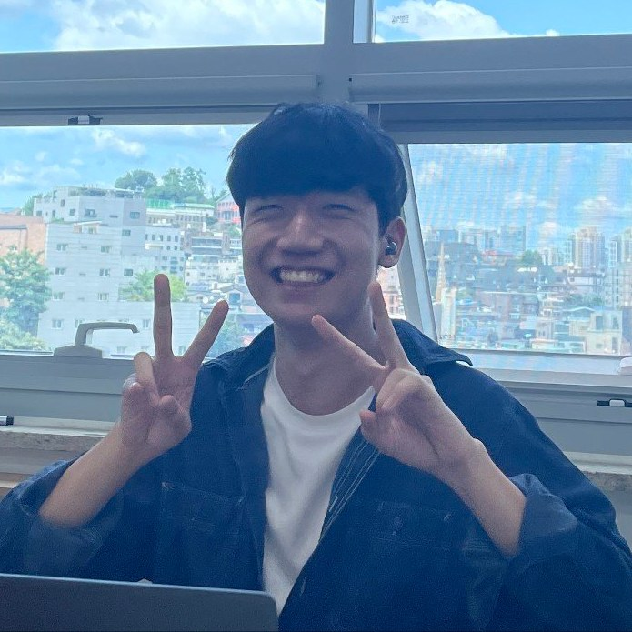
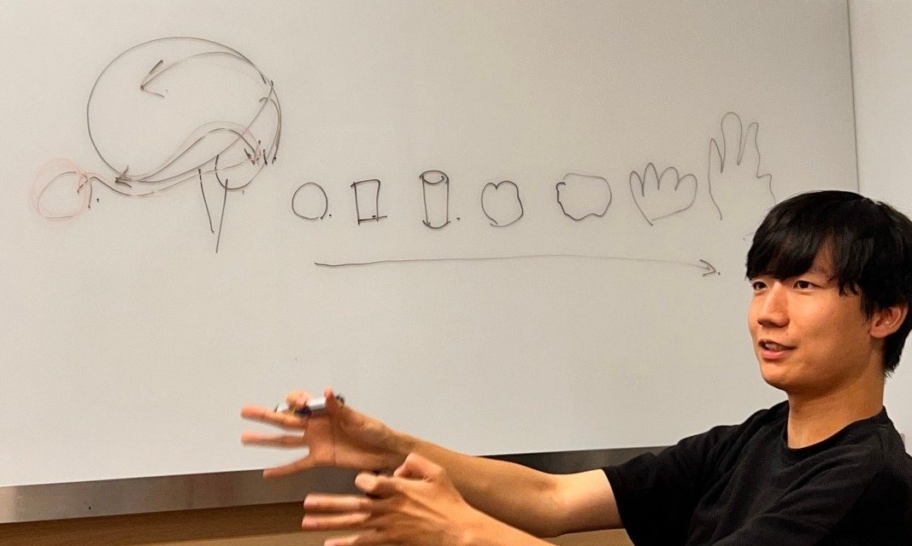
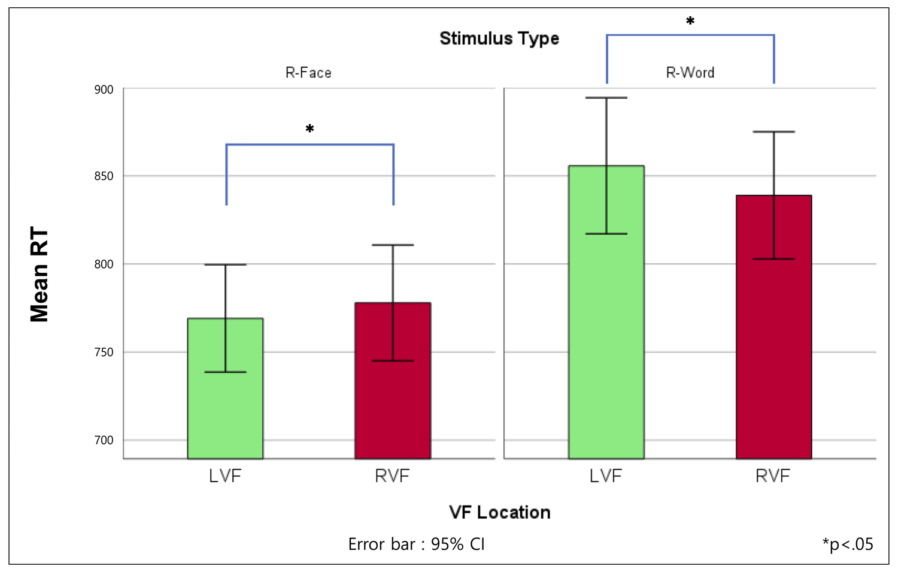
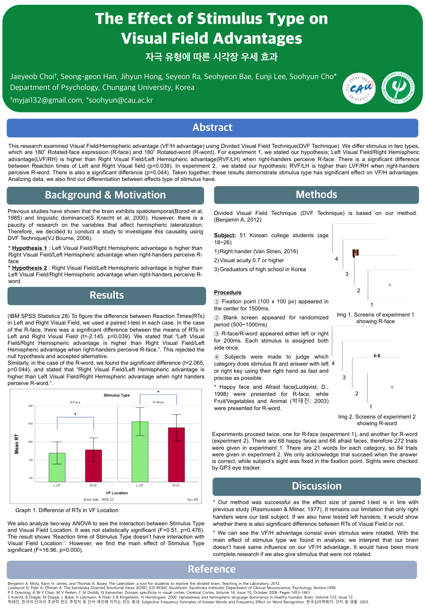
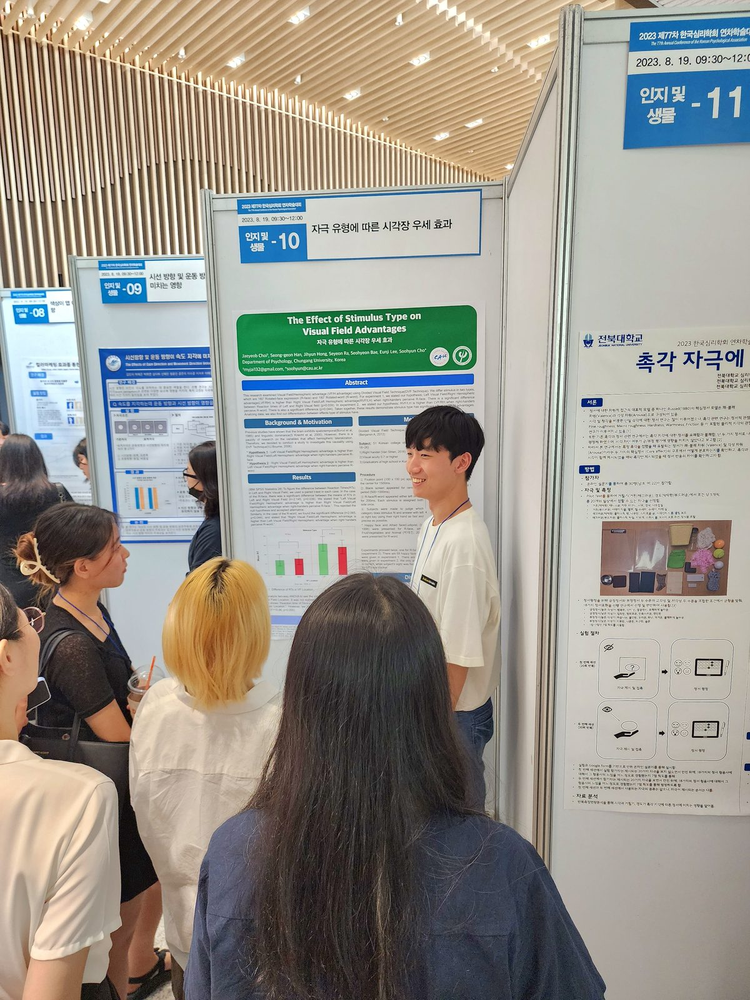

Undergraduate · Department of Psychology · Chung-Ang University, Seoul
Jaeyeob Choi
I am an undergraduate in the Department of Psychology at Chung-Ang University in Seoul, majoring in psychology with a minor in economics (B.A. expected Summer 2027). I started from the idea that to understand people, you have to understand the brain. The question I keep returning to is how the brain turns experience into emotion, memory, and choice, and where that process goes wrong, as in depression, anxiety, and dementia.
So far I have worked at the level of behavior. In 2023 I led an undergraduate poster team in Sasaek, our department's student academic club: I designed and ran a divided-visual-field reaction-time experiment with eye-tracking, and we prepared for the conference with direct weekly guidance from Prof. Soohyun Cho. Our poster, on which I was first author, received the Undergraduate Poster Excellence Award at the 77th Annual Conference of the Korean Psychological Association. Next I want to look at the neural basis of behavior with neuroimaging, and then explain it with mathematics and computational models. My interests are still broad; I plan to narrow them through graduate training.

Research interests
Done so far
- Visual field asymmetry
- Face & word perception
- Reaction time
- Eye-tracking
Currently reading
- Neuroimaging (such as EEG and fMRI)
- Anxiety & amygdala
- Hippocampus & episodic memory
- Decision-making (economics)
- Computational models of behavior
- Machine learning (such as multimodal models)
Long-term
- Clinical disorders (such as dementia)
- Biomedical engineering
- Neuroeconomics
Research
The Effect of Stimulus Type on Visual Field Advantages
Undergraduate Poster Excellence Award · Korean Psychological Association, 2023
Does the visual-field (hemispheric) advantage depend on what is being perceived? We predicted that right-handers would respond faster to faces in the left visual field (right hemisphere) and to words in the right visual field (left hemisphere), with both kinds of stimuli rotated 180°.
- Method
- A divided-visual-field reaction-time task. Fifty-one right-handed college students, screened with the Van Strien (2016) handedness inventory, categorized a stimulus shown for 200 ms to the left or right of fixation: happy vs. afraid faces (272 trials) and Korean words, animal vs. fruit/vegetable (84 trials). A trial counted only when the answer was correct and gaze had stayed on the fixation point, checked with a Gazepoint GP3 eye-tracker.
- Result
- Responses were faster in the left visual field for rotated faces (paired t = −2.145, p = .039) and in the right visual field for rotated words (t = 2.065, p = .044), as predicted. In a two-way ANOVA the stimulus type × visual field interaction was not significant (F = 0.51, p = .476); only the main effect of stimulus type was (F = 16.96, p < .001). Limitations: only right-handers were tested, and there was no upright (non-rotated) control.
- How it was run
- A student-club project. The team met twice a week; I designed the eye-tracker-controlled experiment and ran data collection for about two months. We prepared for the conference with direct weekly guidance from Prof. Soohyun Cho.



Materials
Word stimuli. Korean nouns from two categories (animal, fruit/vegetable), shown rotated 180°:
Face stimuli. Happy and afraid faces from the Karolinska Directed Emotional Faces (Lundqvist, Flykt, & Öhman, 1998), rotated 180°. They are not reproduced here, in line with the KDEF terms of use.
Example data. Raw data from one participant (CSV): anonymized trial-level data, 272 trials, before filtering. Columns: visual field, stimulus category, response, response time, and Focus (whether gaze stayed on fixation). Only trials with maintained fixation entered the analysis.
Publications & awards
Conference presentation
Choi, J.†, Han, S., Hong, J., Ra, S., Bae, S., Lee, E., & Cho, S.* (2023). The Effect of Stimulus Type on Visual Field Advantages. Poster presented at the 77th Annual Conference of the Korean Psychological Association ("In the age of AI, Rethink the Human Mind"), Suwon, Korea. Undergraduate Poster Excellence Award
† First author & presenting author · * Corresponding author
Awards & honors
Undergraduate Poster Excellence Award
Korean Psychological Association, 77th Annual Conference · as first author
Best Team Award
1st Annual Competition in Sasaek, "Psychology in the Digital Age" · Department of Psychology, Chung-Ang University
Team presentation: "In the digital age, how do smart devices affect our cognition?"
Training
Education
B.A. in Psychology, minor in Economics
Chung-Ang University, Seoul, Korea · expected Summer 2027
Relevant coursework (selected): Foundations of Cognitive Neuroscience · Perceptual Psychology · Biological Psychology · Experimental Psychology · Psychological Statistics · Clinical Psychology · Computational Thinking & AI Literacy · Behavioral Economics, Econometrics, and Dynamic Economic Theory (in progress, Fall 2026)
Research training & study groups
Brain and Cognitive Science Community (BCSC), 5th cohort
A society of undergraduates interested in brain and cognition · website
Wrote a paper review and held group discussions on brain and cognition. Paper reviewed: a 2012 article on patterns of age-related cognitive change (Korean Journal of Cognitive and Biological Psychology, 24(2), 127–148).
Korea Students' Society for Psychology, 3.5th cohort · Cognitive Neuroscience track
A nationwide society of undergraduates · website
A peer-learning study group built on Banich & Compton's Cognitive Neuroscience. Each week every member wrote at least three questions on the assigned chapters, then solved and explained one another's. The course ended with open presentations and a comprehensive exam.
Skills
- Programming & analysis
- Experimental
- Languages
Conferences attended
2026 Korea BCI Society Fall Conference
Sungkyunkwan University, Suwon
World Brain Awareness Week
Seoul National University
Korean Society for Cognitive Science, Annual Conference
"Mind, Brain and Data"
77th Annual Conference of the Korean Psychological Association (presenter)
Suwon Convention Center
Korean Society for Cognitive Science, Annual Conference
Korean Society for Cognitive & Biological Psychology, Annual Conference
"Cognition in the wild: Toward an understanding of naturalistic cognition" · Yonsei University
Leadership & activities
Academic leadership
(current)
President, academic club Sasaek
Department of Psychology, Chung-Ang University · Instagram
Currently running the semester program with undergraduates who want to go into research: reverse-engineering published studies into research proposals, a student colloquium, the 5th annual Sasaek conference in November, and an open lab seminar.
Organizer, "Cognitive Neuroscience Research Preview Course"
Academic club Sasaek, Chung-Ang University
Planned and ran the program: built the weekly curriculum and presentation schedule, and led the members' research-topic presentations.
Vice President, academic club Sasaek
Department of Psychology, Chung-Ang University
Other activities
Head of Psychology Dept. Planning Team, Freshman Orientation
College of Social Sciences, Chung-Ang University
Responsible for planning, budget and operations of the department's program in an orientation event of about KRW 100 million; led a planning team of 18.
Vice President, band club SPSS
Department of Psychology, Chung-Ang University
Handled accounting and finance and assisted with planning for a club of about 80 members; played keyboard.
Head of PR Division, Psychology Student Council BE:HIND
Department of Psychology, Chung-Ang University
Republic of Korea Air Force
Sergeant, honorable discharge · 21 months of service